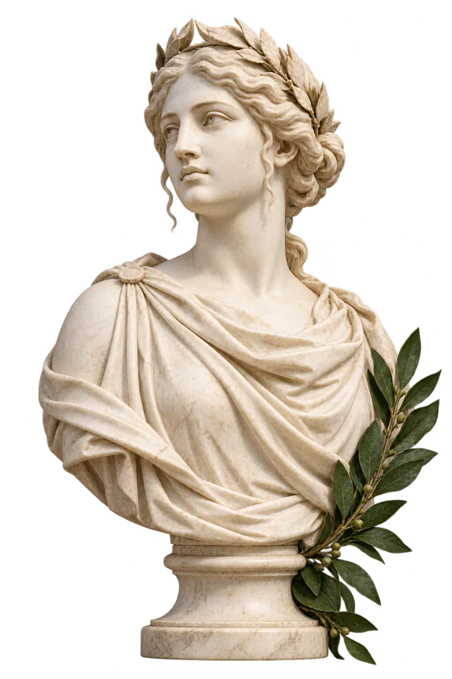

Encuentra tu libro
Busca por título y consulta su disponibilidad.
Las buenas historias
merecen circular.
Literatura, arte y otras formas de mirar.
Un libro puede cambiar tu forma de ver. Encuentra tu próxima lectura y llévatela en préstamo.
Explorar el catálogo
EN PORTADA / ARTE Y NATURALEZA
Imagen de referencia para esta
propuesta visual.
Selección del catálogo · 4 libros
No encontramos ese título. Prueba con otra búsqueda o categoría.

Hay páginas que se quedan contigo. Una voz, una pregunta, una manera distinta de nombrar el mundo.
La literatura nos invita a detenernos; el arte, a mirar de nuevo.
Entre ambos aparece ese espacio donde una idea encuentra su propia forma.
Abre un libro. Sigue una frase. Quizá tu próxima lectura empiece justo donde termina lo que ya conoces.
De la biblioteca a tus manos
Busca por título y consulta su disponibilidad.
Ingresa y envía tu solicitud para su aprobación.
Consulta el estado y la devolución en Mis préstamos.